▲ 전북 정읍 내장산 능선. 단풍 명소로 꼽히지만 11월에는 통제 구간을 함께 확인해야 한다
가을 산행 계획에서 가장 자주 어긋나는 것은 날씨가 아닙니다. 문이 닫혀 있는 경우입니다.
그리고 그 날짜는 하나가 아닙니다. 산림청이 정하는 산불조심기간과 국립공원이 정하는 탐방로 통제 기간이 따로 움직입니다. 2025년의 경우 전자는 10월 20일, 후자는 11월 15일에 시작했습니다.
1. 날짜가 두 개입니다
먼저 두 제도를 분리해야 합니다. 산불조심기간은 산림청이 산림보호법에 따라 공고하는 전국 단위 기간입니다. 탐방로 통제는 각 국립공원사무소가 별도로 정합니다.
2025년 가을철 산불조심기간은 10월 20일부터 12월 15일까지 57일간이었습니다. 오래된 자료에 적힌 11월 1일 시작과 다릅니다. 그런데 주왕산과 오대산의 탐방로 통제는 11월 15일에 시작했습니다. 같은 가을에 날짜가 셋인 셈입니다.
| 구분 | 주체 | 기간 |
|---|---|---|
| 산불조심기간 | 산림청 | 10월 20일 ~ 12월 15일 |
| 탐방로 통제 | 주왕산·오대산국립공원사무소 | 11월 15일 ~ 12월 15일 |
| 과거 통용 자료 | — | 11월 1일 ~ 12월 15일(현재와 불일치) |
그래서 두 번 확인해야 합니다. 산불조심기간만 보고 "10월 20일부터 다 막힌다"고 여기면 갈 수 있는 길을 포기하게 되고, 반대로 오래된 자료를 보고 "11월 전에는 괜찮다"고 여기면 현장에서 막힙니다.

▲ 내장산 — 전북 정읍 내장사 일대. 단풍이 이 정도로 물들 무렵이면 이미 산불조심기간이 시작된 뒤다 ⓒ 전북특별자치도 투어전북
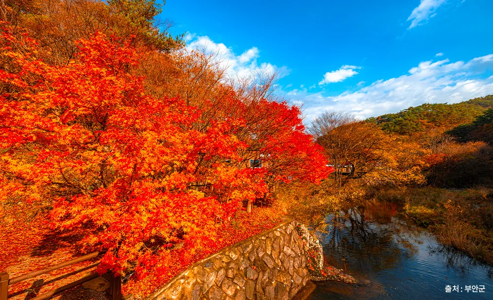
▲ 변산반도 — 전북 부안. 서해와 맞닿은 국립공원도 같은 통제 대상에 들어간다 ⓒ 부안군
2. 통제는 어떻게 이뤄지나
산불조심기간은 산 전체를 닫는 제도가 아닙니다. 국립공원공단이 탐방로별로 통제 여부를 정합니다.
통제되는 곳은 대체로 능선 종주 구간과 대피소로 이어지는 장거리 코스입니다. 진화 인력이 접근하기 어렵고, 발화 시 확산이 빠른 구간이기 때문입니다.

▲ 설악산 — 강원. 능선 종주 구간은 진화 인력 접근이 어려워 우선 통제 대상이 된다 ⓒ 강원특별자치도 (공공누리 제1유형)
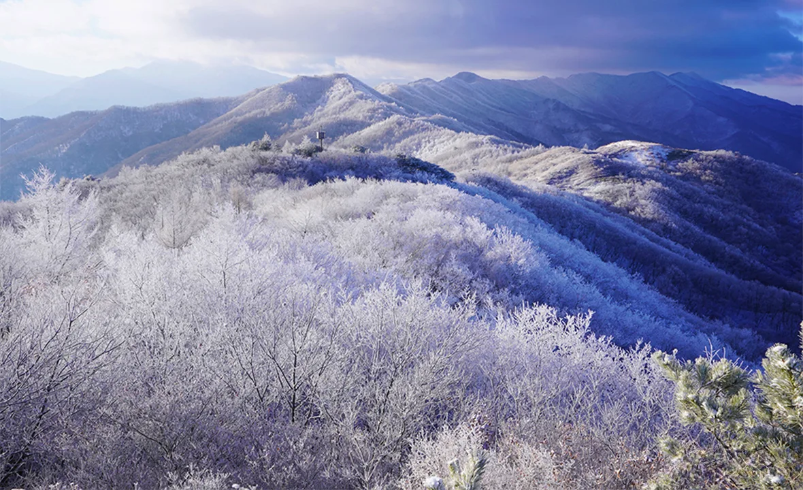
▲ 지리산 — 통제는 12월 중순까지 이어져 초겨울 산행 구간과도 겹친다 ⓒ 전북특별자치도 투어전북
| 공원 | 통제 | 개방 |
|---|---|---|
| 주왕산 | 6개 구간 28.9㎞(절골입구~대문다리~가메봉 등) | 22.2㎞(주산지입구~주산지, 대전사~용연폭포 등) |
| 오대산 | 5개 구간(적멸보궁~두로령 5.7㎞, 구룡폭포~동피골 15.5㎞ 등) | 4개 구간(해탈교~상원사 10㎞, 소금강~구룡폭포 2.2㎞ 등) |
| 속리산 | 13개 구간(용화지구~매봉~묘봉 7㎞ 등) | 11개 구간(문장대~천왕봉 2.2㎞ 등) |
공통점이 보입니다. 통제되는 것은 길고 외진 능선 구간이고, 열려 있는 것은 짧고 접근이 쉬운 계곡·사찰 코스입니다. 단풍을 보러 가는 사람 다수에게는 후자면 충분합니다.
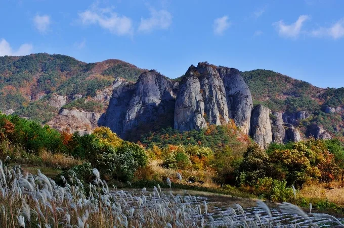
▲ 주왕산 — 경북 청송. 통제 구간은 28.9㎞지만 핵심 탐방로 22.2㎞는 평소대로 열린다 ⓒ 경북일보
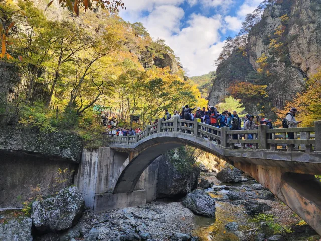
▲ 주왕산 — 대전사~용연폭포 방향 계곡 코스는 개방 구간에 속한다 ⓒ 매일신문
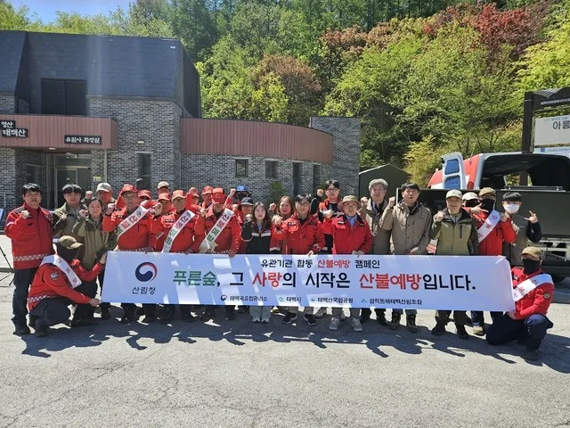
▲ 태백산 — 강원 태백. 통제와 함께 입구에서 산불예방 캠페인과 단속이 병행된다 ⓒ 천지일보
📍 왜 가을에 산불이 문제인가
가을은 낙엽이 쌓이고 대기가 건조해지는 시기입니다. 바닥에 마른 연료가 깔린 상태가 됩니다.
여기에 바람이 더해집니다. 능선에서는 불이 지형을 타고 빠르게 번집니다. 통제 대상이 능선 구간에 집중되는 이유입니다.
3. 단풍 절정은 통제 직전에 지나갑니다
여기서 좋은 소식이 하나 나옵니다. 남부 산지의 단풍 절정은 대체로 10월 하순에서 11월 초순입니다. 그런데 탐방로 통제는 11월 15일에 시작했습니다.
단풍 절정 구간은 통제가 걸리기 전에 대체로 지나갑니다. 산불조심기간(10월 20일)이 이미 시작된 상태이긴 하지만, 그것만으로 탐방로가 닫히는 것은 아닙니다. 실제로 길이 막히는 시점은 단풍이 끝나갈 무렵입니다.
| 시기 | 단풍 진행 | 탐방로 상태 |
|---|---|---|
| 10월 초·중순 | 고지대 색 변화 시작 | 통상 개방 |
| 10월 20일 | 중턱 진행 | 산불조심기간 시작 — 단속 강화 |
| 10월 하순 | 중턱 절정 | 통상 개방 |
| 11월 초 | 저지대 절정 | 통상 개방 |
| 11월 15일 | 단풍 후반 | 탐방로 통제 시작 |
| 11월 하순~12월 15일 | 낙엽 | 통제 유지 |
그래서 계획의 요령은 하나로 정리됩니다. 능선 종주처럼 통제에 걸리기 쉬운 코스를 원한다면 11월 15일 이전에 다녀오는 것입니다. 그 이후에는 개방 구간 안에서 코스를 고르게 됩니다.
📍 다만 방심하면 안 되는 이유
산불조심기간이 시작되면 탐방로가 열려 있어도 규제는 적용됩니다. 화기와 인화물질 반입, 흡연, 비법정탐방로 출입 단속이 강화됩니다.
또 통제 시작일은 공원마다 다릅니다. 속리산처럼 11월 15일보다 이르게 구간 통제를 시작한 사례도 있습니다. "11월 15일까지는 다 열려 있다"고 일반화하면 안 됩니다.

▲ 덕유산 — 전북 무주. 아래는 단풍, 위는 이미 겨울인 시기가 짧게 존재한다 ⓒ 전북특별자치도 투어전북
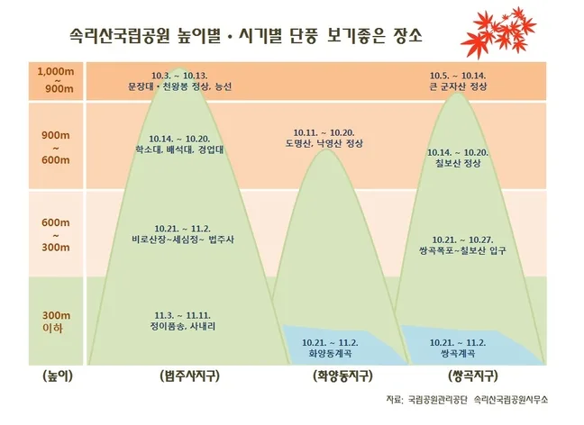
▲ 속리산 — 국립공원공단이 낸 고도별 단풍 시기 도표. 900m 이상은 10월 초, 300m 이하는 11월 초로 갈린다 ⓒ 국립공원공단 속리산국립공원사무소 / 충북일보
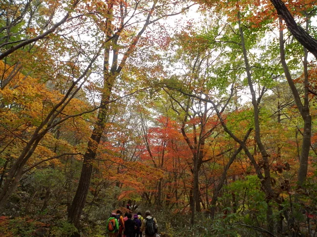
▲ 속리산 — 충북 보은. 저지대 단풍이 물드는 시기가 통제 기간과 겹친다 ⓒ 충북일보
▲ 변산반도 — 전북 부안. 절정이 통제 기간 안쪽에 들어와 있다 ⓒ 부안군
4. 입산시간지정제는 다른 제도입니다
여기서 두 제도를 구분해야 합니다. 자주 섞여서 이해되는데 성격이 다릅니다.
| 구분 | 산불조심기간 통제 | 입산시간지정제 |
|---|---|---|
| 제한 대상 | 구간(어디를) | 시각(언제) |
| 내용 | 특정 탐방로 출입 금지 | 탐방로별 입산·통제 시간 지정 |
| 기간 | 산불조심기간 한정 | 연중 운영 |
| 기준 | 산불 위험 | 산행 거리·소요시간·일몰 |
입산시간지정제는 산행 목적지와 거리, 산행 시간 등을 고려해 탐방로별로 입산·통제 시간을 지정해 운영하는 제도입니다. 가을에는 해가 짧아지면서 이 시각이 앞당겨지는 경우가 있습니다.

▲ 지리산 노고단. 입산시간지정제는 이런 탐방로마다 입산·통제 시각을 따로 정한다 ⓒ 한국관광공사 (공공누리 제1유형)

▲ 오대산 — 강원 평창. 통제 여부는 공원 입구가 아니라 탐방로 단위로 갈린다 ⓒ 한국관광공사 (공공누리 제1유형)
📍 두 번 막힐 수 있습니다
10월 하순 이후 남부 국립공원을 찾으면 두 제도를 동시에 만납니다.
가려던 코스가 산불조심기간 통제 구간이면 아예 못 들어갑니다. 통제 구간이 아니더라도 입산시간을 넘기면 그날은 되돌아와야 합니다. 새벽에 출발했는데 오후 늦게 도착하면 둘 다에 걸릴 수 있습니다.
5. 산마다 사정이 다릅니다
대상 공원이 많지만 성격은 제각각입니다. 단풍철에 몰리는 곳만 봐도 조건이 다릅니다.
내장산은 단풍으로 이름이 난 곳입니다. 방문객이 정점을 찍는 시기가 통제 기간 한복판에 놓입니다. 케이블카와 저지대 탐방로 위주로 계획을 잡으면 영향을 덜 받습니다.

▲ 전북 정읍 내장산. 저지대 코스는 능선 종주보다 통제 영향이 작은 편이다 ⓒ 전북특별자치도 투어전북
덕유산은 고도 차가 큽니다. 향적봉 일대는 이미 겨울에 가까워지는 반면 아래쪽 계곡은 단풍이 남아 있습니다. 같은 산에서 계절이 두 개인 시기가 짧게 존재합니다.
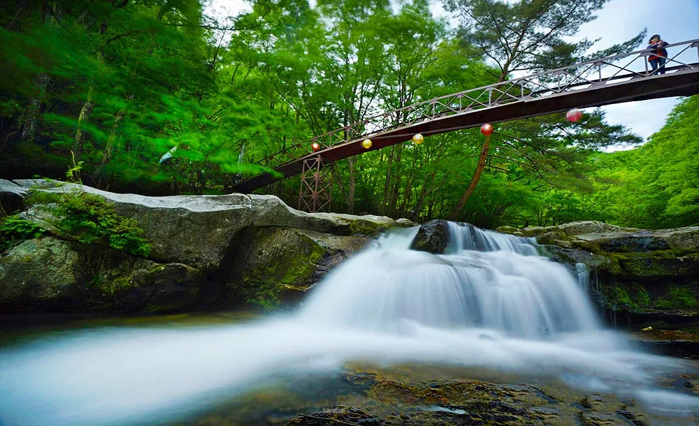
▲ 덕유산 — 전북 무주 구천동. 계곡 코스는 능선보다 통제가 늦게 걸리는 편이지만 예외는 아니다 ⓒ 전북특별자치도 투어전북
계룡산은 접근성이 좋아 당일 산행 수요가 몰립니다. 갑사 방면 단풍이 알려져 있고, 능선 구간과 저지대 사찰 코스의 조건이 크게 다릅니다.

▲ 계룡산 — 충남 공주. 접근성이 좋은 만큼 통제 여부 확인이 더 중요하다 ⓒ 공주시
무등산은 도심에서 바로 이어지는 국립공원입니다. 광주 시가지에서 접근이 짧아 단풍철 주말 집중도가 특히 높고, 저지대 사찰·저수지 코스와 서석대 방향 능선의 조건이 크게 갈립니다.
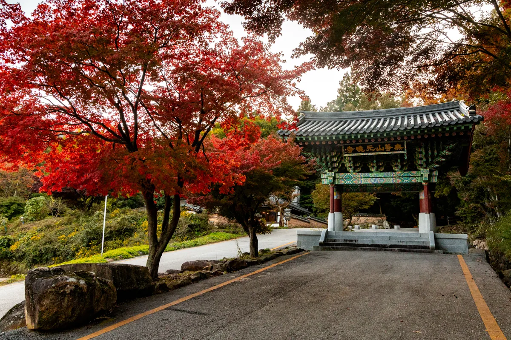
▲ 무등산 — 광주. 저지대 사찰 주변 단풍은 11월에 절정을 맞는다 ⓒ 전남일보
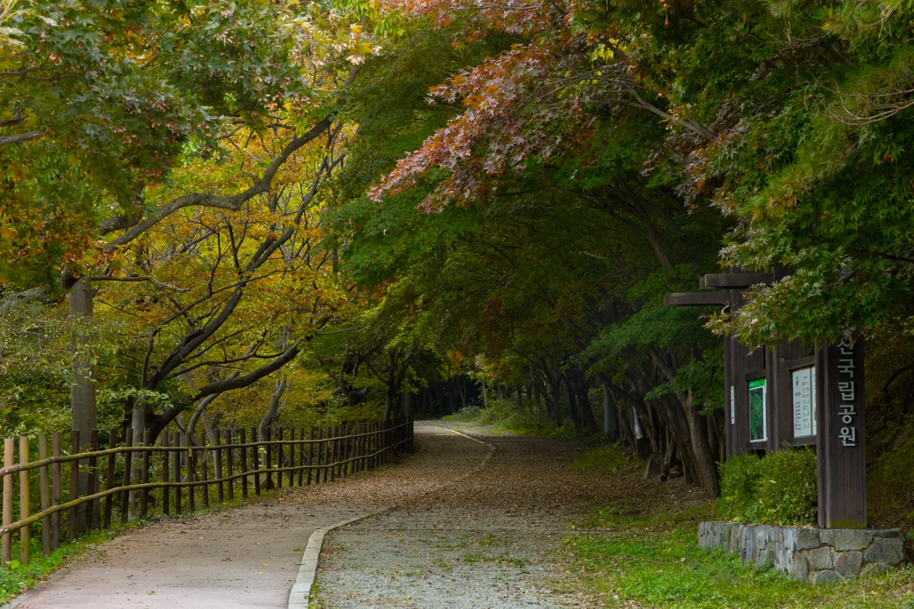
▲ 무등산 — 도심에서 바로 이어지는 진입로가 많아 통제 구간 확인이 더 중요하다 ⓒ 전남일보
6. 나머지 공원들의 조건
대상 공원은 열여덟 곳입니다. 성격이 제각각이라 같은 기간이라도 체감이 다릅니다.
월악산은 능선이 날카롭고 고도차가 큽니다. 영봉 일대는 운해가 자주 끼고, 통제 대상이 되는 장거리 능선 비중이 높습니다. 소백산은 반대로 완만한 초원형 능선이 이어져 데크길 구간이 길고, 개방 구간에서도 조망이 확보됩니다.
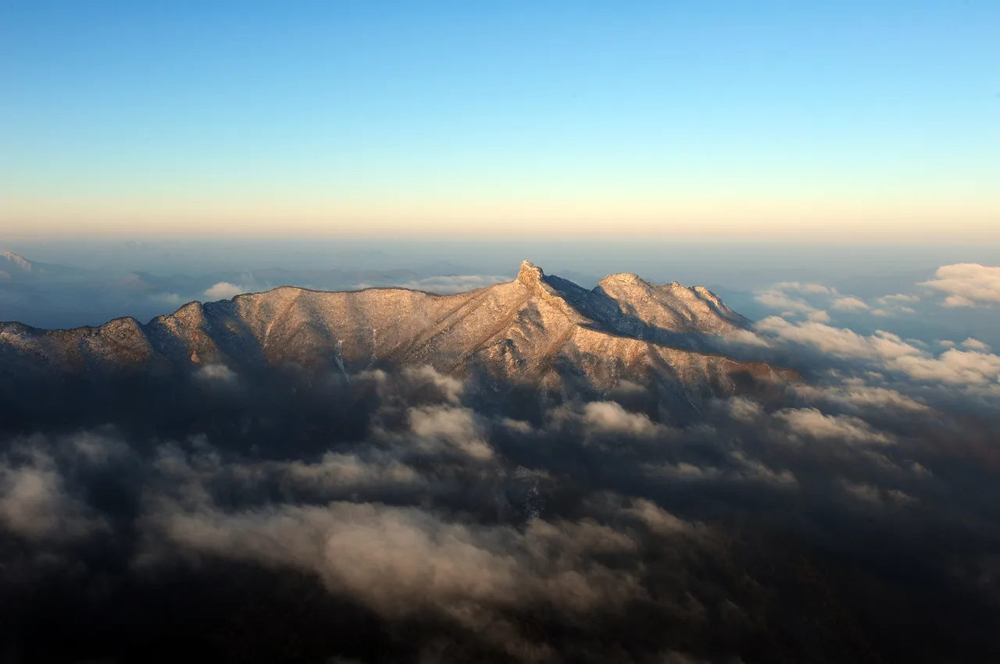
▲ 월악산 — 충북 제천. 영봉 일대는 고도차가 커 능선 구간이 먼저 통제된다 ⓒ 제천시
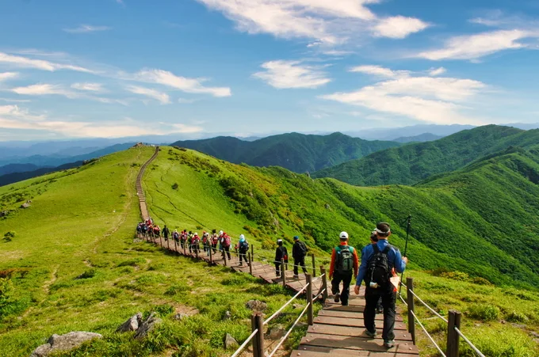
▲ 소백산 — 완만한 초원형 능선이라 데크길 구간이 길게 이어진다 ⓒ 경북일보
월출산은 들녘 한복판에 바위산이 솟은 형태입니다. 산 자체는 작지만 경사가 급해 구름다리와 천황봉 구간에 사람이 몰립니다. 팔공산은 갓바위와 동화사 같은 사찰 동선이 산행과 겹쳐, 등산객이 아닌 방문객까지 같은 길을 씁니다.
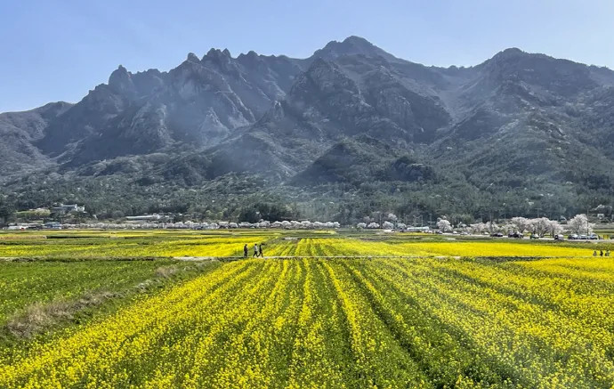
▲ 월출산 — 전남 영암. 평야 위에 솟은 바위산이라 접근은 쉽고 경사는 급하다 ⓒ 남도일보
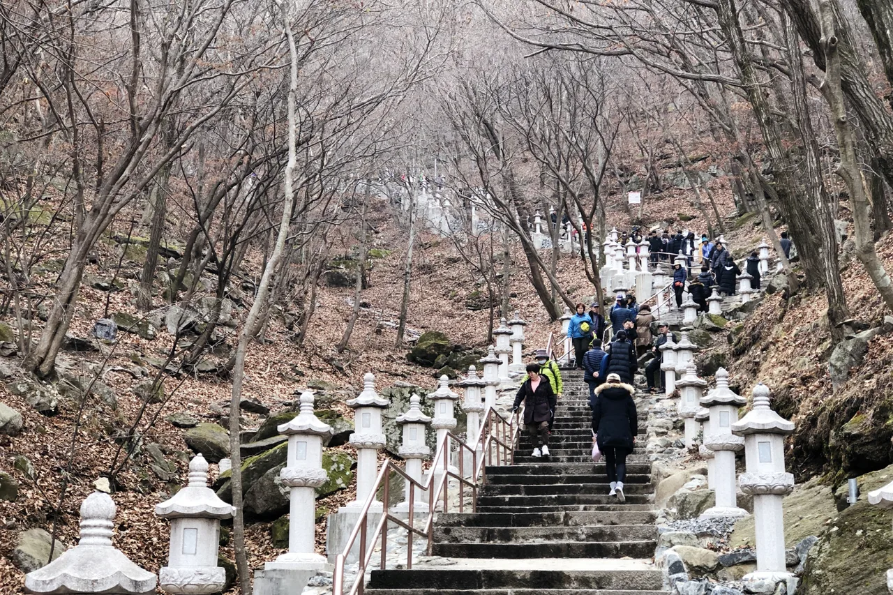
▲ 팔공산 — 갓바위 참배 동선과 등산로가 겹쳐 통제 영향이 넓게 퍼진다 ⓒ 경북일보
북한산은 도심에서 지하철로 닿는 국립공원입니다. 단풍철 주말 밀도가 전국에서 가장 높은 축이고, 그만큼 통제 구간을 모르고 오는 사람도 많습니다. 한려해상은 성격이 아예 다릅니다. 바다와 섬이 공원 구역이라 산불조심기간의 체감이 가장 작은 곳에 속합니다.

▲ 북한산 — 서울. 접근성이 가장 좋은 만큼 단풍철 혼잡도 가장 심하다 ⓒ 천지일보
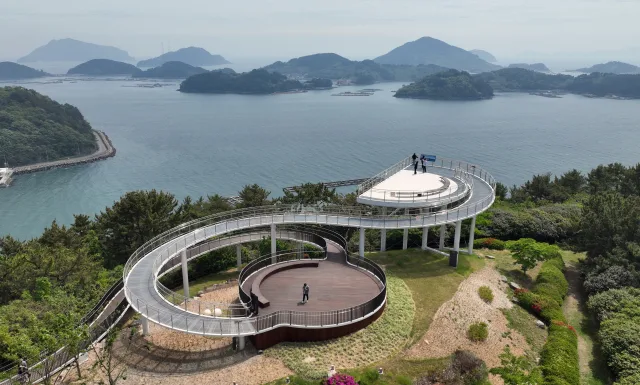
▲ 한려해상 — 경남 통영. 해상 구역 중심이라 산불조심기간의 영향이 상대적으로 작다 ⓒ 경남신문
7. 출발 전에 확인하는 순서
확인 순서를 정해두면 헛걸음이 줄어듭니다.
| 순서 | 확인 내용 |
|---|---|
| 1 | 해당 국립공원의 산불조심기간 통제 구간 여부 |
| 2 | 가려는 탐방로의 입산·통제 시각 |
| 3 | 탐방예약제 적용 구간인지 |
| 4 | 주차장 위치와 주차 요금 |
| 5 | 기상 — 일몰 시각과 강수 |
국립공원공단은 통제정보를 별도 페이지로 공개합니다. 산 이름만 검색해 블로그 정보를 보고 출발하면 지난해 기준을 보게 되는 일이 흔합니다. 시작일이 앞당겨진 사실 자체가 그런 식으로 놓치기 쉬운 정보입니다.
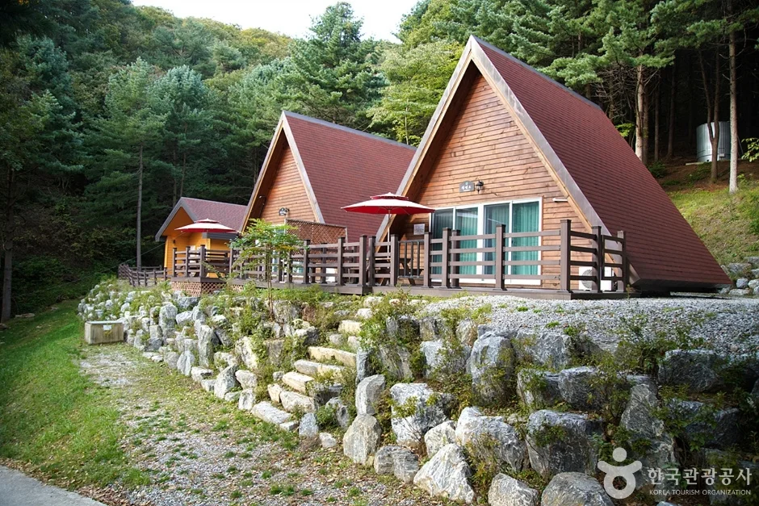
▲ 치악산 — 강원 원주. 야영장과 대피소는 통제와 별개로 예약 여부를 따로 확인해야 한다 ⓒ 한국관광공사 (공공누리 제1유형)
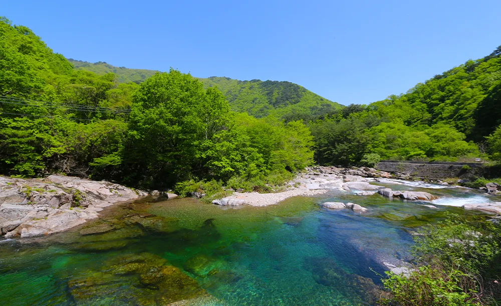
▲ 지리산 — 계곡 코스라도 통제 구간에 포함될 수 있어 사전 확인이 필요하다 ⓒ 전북특별자치도 투어전북
8. 2026년 기간은 아직 나오지 않았습니다
마지막으로 분명히 해둘 것이 있습니다. 산불조심기간의 시작일과 종료일, 그리고 통제 구간은 해마다 공고로 확정됩니다.
이 기사에 적은 10월 20일~12월 15일은 2025년 가을철 공고 기준입니다. 2026년 가을철 기간은 아직 공고되지 않았습니다. 그해의 건조 상황과 산불 위험도에 따라 다시 조정될 수 있으므로, 산림 당국과 국립공원공단의 공고를 확인해야 합니다.
📍 산불조심기간에 금지되는 행위
기간 중에는 산림으로부터 100m 이내에서 논두렁·밭두렁을 태우거나 영농부산물 등을 소각하는 행위가 금지됩니다.
입산통제구역과 통행 제한 등산로 출입, 입산 시 라이터·버너 등 화기와 인화물질 휴대, 산림이나 그 인근에서의 흡연과 담배꽁초 투기도 금지됩니다.
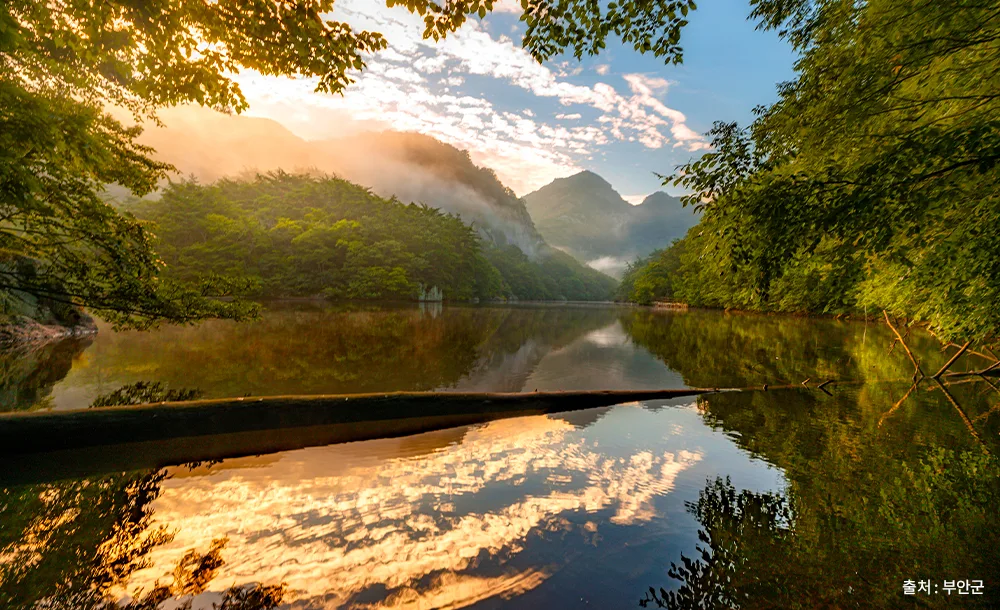
▲ 변산반도 — 전북 부안. 해안형 국립공원도 산불조심기간 대상에서 빠지지 않는다 ⓒ 부안군
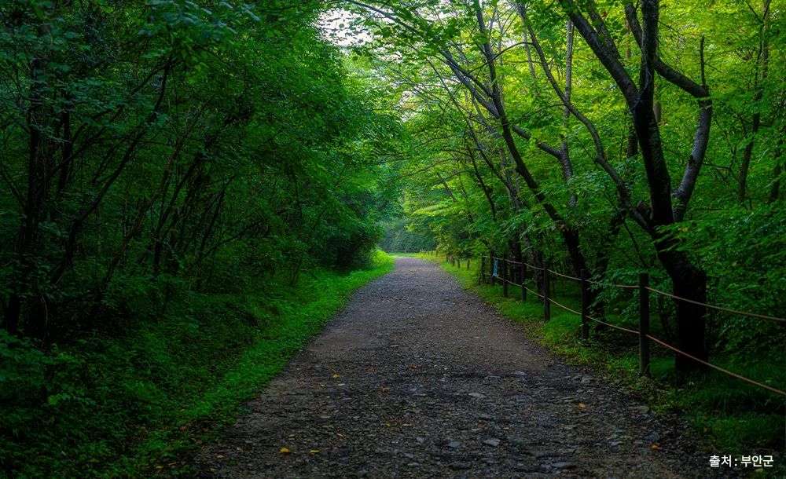
▲ 변산반도 — 저지대 숲길. 통제 구간을 먼저 확인하고 코스를 고르는 편이 낫다 ⓒ 부안군
계획을 세우는 순서를 바꾸면 실패가 줄어듭니다. 단풍 시기를 먼저 정하고 코스를 고르는 대신, 갈 수 있는 코스를 먼저 확인하고 그 안에서 시기를 맞추는 쪽입니다.